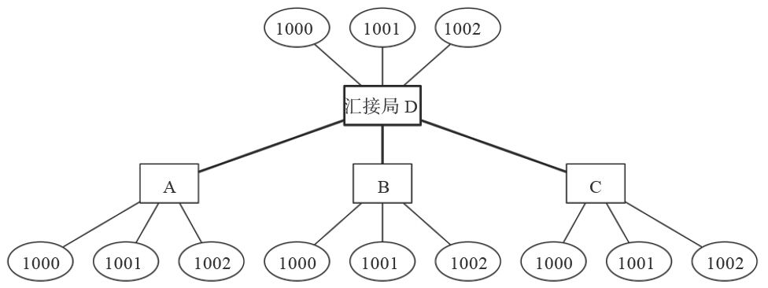
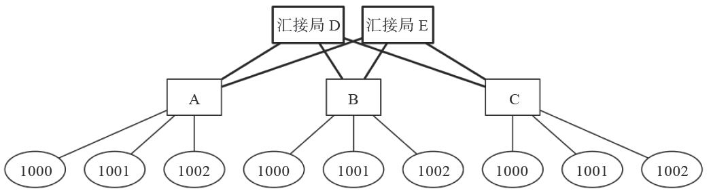
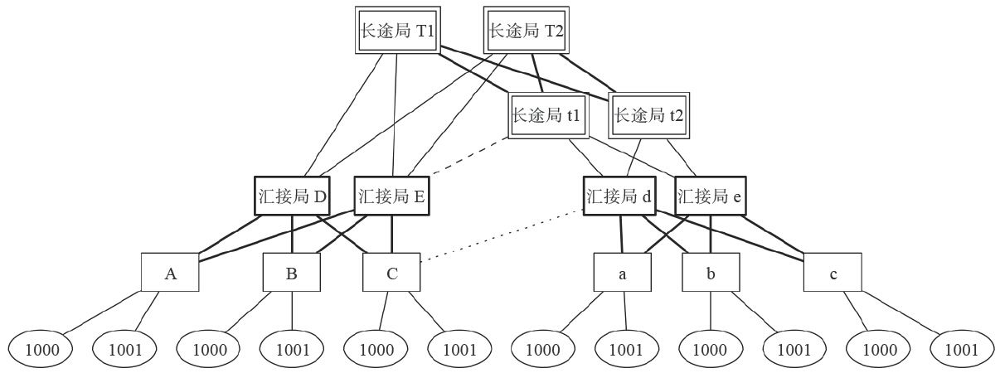

13.2 FreeSWITCH与FreeSWITCH对接
其实，多机对接的目的就是让不同交换机上的用户能互相打电话。从呼叫上来讲，就是把一个呼叫路由到正确的目的地。在FreeSWITCH中，就是设置正确的Dialplan。在此，我们先来看一下不同的FreeSWITCH交换机（不同的主机或不同的实例）之间的对接。
下面我们就带领大家来看几种常见对接方式和组网情况。
13.2.1 双机对接
虽然在13.1节我们在同一台机器上启动了两个实例，理论上讲我们可以继续使用上面的例子做下面的练习。但是，由于下面我们还要讲更多的FreeSWITCH系统（实例），为了防止混乱，这里还是以每台机器上都有一个FreeSWITCH实例来进行讲解，这样我们就可以以不同的IP地址代表不同的FreeSWITCH，讲起来都更容易理解一些。
假设你有两台FreeSWITCH主机，分别为A和B，IP地址分别为192.168.1.A和192.168.1.B。每台机器均使用默认配置，也就是说在每台机器上1000～1019这20个号码之间可以互打电话。位于同一机器上的用户称为本地用户，如果需要与其他机器上的用户通信，则其他机器上的用户就称为外地用户。
如果我们需要两台机器之间的用户可以互拨，最需要解决的问题不是技术上如何配置，而是一个逻辑问题，即我们需要先确定一种拨号方案。例如：如果A上的1000想拨打B上的1000，则B上的1000相对于A上的1000来说就是外地用户。就一般的企业PBX而言，一般拨打外地用户就需要加一个特殊的号码，比方说0。这时0就称为出局字冠 [1] 。
由上面例子可知，为了完成该实验，我们规定：不管是A上的用户还是B上的用户，拨打外网用户均需要在实际的电话号码前加拨0。
在A机上，把以下Dialplan片断加到conf/dialplan/default.xml中（注意在测试时，类似我们在前面讲到的，把下列配置加得“靠前”一点，以防止与其他现有的配置项相冲突）：
<extension name="B">
<condition field="destination_number" expression="^0(.*)$">
<action application="bridge" data="sofia/external/sip:$1@192.168.1.B:5080"/>
</condition>
</extension>
其中，正则表示式^0(.*)$表示匹配所有以0开头的被叫号码，匹配完成后，括号中的匹配结果会被绑定到变量$1中。因此，如果A上的用户呼叫01000，则$1的值就是1000，bridge是一个App，它的参数就变成sofia/external/sip:1000@192.168.1.B:5080，它是一个呼叫字符串。在一个呼叫中，当FreeSWITCH执行到这里的bridge时，就会从本机的external Profile（本机的5080端口）向B的5080端口发送INVITE呼叫请求。
注意，在上述过程中，被叫号码中的第一个0在到达B时丢失了。这是系统对接中常用的一个策略，俗称把0“吃掉”了。
B在5080端口上收到INVITE请求后，由于5080端口默认走public Dialplan，所以查找public.xml，可以找到以下的Dialplan配置项：
<extension name="public_extensions">
<condition field="destination_number" expression="^(10[01][0-9])$">
<action application="transfer" data="$1 XML default"/>
</condition>
</extension>
上述Dialplan中的正则表达式^(10[01][0-9])$会匹配被叫号码1000，然后执行transfer，并把来话转到default Dialplan。呼叫转到default Dialplan后，路由规则就跟本地用户的来话一样了，因而最终B上的1000就会振铃。如果B摘机接听，电话就可以接通了。
如果B上的用户也要拨打A上的用户，那么只需要在B上也做类似A上的配置就可以了。因为A和B是完全对称的。
13.2.2 汇接
理论上来讲，所有的对接模式都可以采用上面的双机对接模式，即上述的对接模式是一切对接的基础。下面我们来考虑一些更复杂的情况。比方说，在此我们假设全世界的交换机都变成FreeSWITCH的情况。我们将各FreeSWITCH编号为A、B、C、D、E、F、G……如果A上的用户要跟世界上所有的用户都能通话，那么A上就需要配置到所有其他主机的路由，这显然是不现实的。
为了解决这一问题，A、B、C、D开会讨论。D主动说：“我精力比较旺盛，给你们3个提供转接服务吧，你们就不用费心了”。这时候，D就成了一个汇接局，为A、B、C之间的通话做转接服务。A、B、C就称为端局，因为他们只有终端用户（本地用户）。拓扑结构如图13-2所示。

图13-2 汇接局模式
同时，大家商量了新的拨号规则：本地用户之间的通话拨号规则不变，但是如果拨叫其他外地用户的话，则需要拨打相应的局号（即，如果A上的用户呼叫B上的1000，则拨打B1000），并统一送到D进行汇接。我们以A为例，它上面的Dialplan如下：
<extension name="D">
<condition field="destination_number" expression="^([B-Z].*)$">
<action application="bridge" data="sofia/external/sip:$1@192.168.1.D:5080"/>
</condition>
</extension>
其中，正则表达式^([B-Z].*)$表示任何以B～Z开头的号码（我们假设世界上只有这么多FreeSWITCH）都送到D（即192.168.1.D）的5080端口上去。注意，这里并没有“吃掉”第一位号码，因为如果吃掉的话，D就不知道如何进行下一步路由了。所以，如果A上的用户拨打B1000，在D上将收到B1000。
在D上，收到5080端口的呼叫请求后，查找public Dialplan对来话进行路由。它的Dialplan设置如下：
<extension name="D">
<condition field="destination_number" expression="^D(.*)$">
<action application="transfer" data="$1 XML default"/>
</condition>
</extension>
上述Dialplan说明，如果被叫号码的首位是D，则说明是一个本地用户，所以“吃掉”首位的“D”，然后把路由转（transfer）到default Dialplan进行处理。
对于被叫号码不在本地的用户，则使用下列Dialplan：
<extension name="D">
<condition field="destination_number" expression="^([A-CE-Z])(.*)$">
<action application="bridge" data="sofia/external/sip:$2@192.168.1.$1:5080"/>
</condition>
</extension>
其中，正则表示式^([A-CE-Z])(.*)$匹配所有除D以外的A到Z开头的被号码。我们还是以有人拨打B1000为例，匹配成功后，$1的值为B，而$2的值为1000，所以，bridge的参数中呼叫字符串就会变成sofia/external/sip:1000@192.168.1.B:5080，因而相当于在D上“吃掉”了被叫号码中最首位的“B”，并把电话送到B的5080端口上。
电话到达B后，B上默认的Dialplan就可以将电话路由到本地用户上，因而电话接通。这种方式就称为汇接模式。由于D即带本地用户，又作为汇接局，因而它是一种混合模式的汇接局。如果D上不带用户，而专门做汇接这项工作，就称为一个纯粹的汇接局。
所有局间的通话都是通过D的，因而它的压力比较大。在实际应用中，如果A、B、C之间的网络直接可达，则可以让D仅转发SIP信令，而让RTP流直接在端局之间传递。在上述配置的bridge Action之前增加如下参数可以让D工作在Bypass Media（媒体绕过）模式，仅转发SIP信令，而让RTP媒体流在端局之间传送：
<action application="set" data="bypass_media=true"/>
上述参数是在Dialplan中设置的，因而仅针对当前通话有效。如果想让D对所有通话，不管什么情况都使用Bypass Media，则可以直接在Profile（这里我们使用的是external）中添加如下设置：
<param name="inbound-bypass-media" value="true"/>
当然，理论上讲，除了D之外，其他的端局也可以采用Bypass Media技术，让媒体流只在终端用户之间发送，而不经过FreeSWITCH。但是，一般来说，终端用户可以会位于NAT设备的后面，它们之前的媒体流互通并不总是可行的，因而在端局很少这么做。
13.2.3 双归属
即使采用了Bypass Media，D的压力还是很大。当然，不一定是电话的压力，更可能是精神上的压力。因为，如果一旦D出现了故障，则A、B、C之间的用户就都打不通电话了。
为了解决这一问题，它们又找到来了E，让它做一个备份的汇接局。并且，把D和E的本地用户都分了一下，放到A、B、C上，让D和E专门做汇接。拓扑结构如图13-3所示。
这样就可以把E上的路由规则配置得跟D上一模一样。但每个端局都同时连接到两个汇接局上。一旦其中一个出现故障，则另一个可以接替工作。这种拓扑方式就称为双归属（每个端局都归属于两个汇接局）。端局的配置如下（仍以A为例，注意，由于“192.168.1”太长了，为了排版方便，我们以“IP.”代替它，读者知道它是一个IP地址就行了）：

图13-3 双汇接局双归属网络拓扑
<extension name="DE">
<condition field="destination_number" expression="^([B-Z].*)$">
<action application="bridge"
data="sofia/external/sip:$1@IP.D:5080|sofia/external/sip:$1@IP.E:5080"/>
</condition>
</extension>
这里我们修改了呼叫字符串，增加了使用“|”连接起来的两个呼叫字符串。它的意思是，如果第一个呼叫不成功（到D的），则使用下一个呼叫字符串（送到E上）。这种方式就称为主备用模式。
很容易看出，上述配置虽然解决了D的精神压力，但是，它实际的话务压力还是很大的。因为，只要它不出故障，E就没事干，显然很不公平。所以，实际的双归属汇接局大部分是以话务负荷分担的方式进行的。所谓负荷分担，就是平时在端局将50%的通话送到D上，50%通话送到E上，让两端的负载差不多。一旦其中一台发生故障，则所有的通话都送到另外一台上。负荷分担的算法有很多，这里我们可以使用如下Dialplan实现（以A上的出局路由为例）：
<extension name="DE">
<condition field="destination_number" expression="^([B-Z].*[13579])$">
<action application="bridge"
data="sofia/external/sip:$1@IP.D:5080|sofia/external/sip:$1@IP.E:5080"/>
</condition>
</extension>
<extension name="ED">
<condition field="destination_number" expression="^([B-Z].*[24680])$">
<action application="bridge"
data="sofia/external/sip:$1@IP.E:5080|sofia/external/sip:$1@IP.D:5080"/>
</condition>
</extension>
通过上述配置，根据正则表达式^([B-Z].*[13579])$，所有被叫号码以奇数结尾的都优先送到汇接局D上（如果D失败仍然会送到E）。同理，所有以偶数结尾的被叫号码都会优先送到E上，如果失败后则尝试D。这就实现了一个简单的50%/50%负荷分担策略。其他类似的策略可以使用随机数实现，也可以使用mod_distributor（FreeSWITCH中的一个模块，参见15.5.4节）中提供的方法实现。当然，实际应用中需要考虑的事情还有很多，这里就不多讲了。
13.2.4 长途局
一般来说，一个地级市的电话网络有两个汇接局就够用了。如果需要在不同的地级市间打长途电话，上面需再建设长途局，以便与其他地级市的长途局互通。有了长途局的网络拓扑结构如图13-4所示（我们将另外一个地级市的名称全部以小写字母表示）。

图13-4 有长途局的网络拓扑
长途局也是采用成对配置的方式，汇接局跟长途局之间也采用双归属。另外，如果某地级市到另外一个地级市的话务量比较高，也可以从汇接局直接向另外一个地市的长途局开中继并设置高速直达路由（如E和t1之间），它可以避免占用本地长途局的资源。当然，极少数情况下也可能从本地端局直接向另外一个地级市的其他局（如汇接局，C和d之间）开通高速直达中继。
有了长途局，就有了长途区号。我们假设长途局T1的长途区号就是T1，按习惯使用0作为国内长途字冠，那么，如果端局a上的用户1000呼叫端局A上的用户1000时，它要拨的号码就是0T1A1000（参见1.2.1节）。这样一通电话经过的各交换机的号码分析和路由，最后走的路径是：1000→a→d（或e）→t1（或t2）→T1（或T2）→D（或E）→A→1000。
具体的配置方式我们就不多讲了。总之，电话网就是这样以树状和网状的结构向外延伸，最终到达世界的每一个角落。电话网内所有的用户也都可以通过一定的拨号规则打通其他的用户的电话。
13.2.5 ACL
在生产环境中，只考虑把电话接通还是不够的，还得考虑安全性。上面的方法只使用5080端口从public Dialplan做互通，而发送到5080端口的INVITE是不需要鉴权的，这意味着任何人均可以向它发送INVITE从而按你设定的路由规则打电话。这种方式用在端局上问题可能不大，因为你的public Dialplan仅将外面的来话路由到本地用户。但在汇接局模式下，你可能将一个来话再转接到其他局去，那你就需要好好考虑一下安全问题了，因为你肯定不希望全世界的人都通过你的汇接局免费的往各端局打电话。
为了防止这个问题，我们在汇接局上关闭5080端口，而让所有来话都送到5060端口上（internal Profile）。5060端口上的来话是需要先鉴权才能路由的。在这种汇接局模式中，一般会使用IP地址鉴权的方式。而IP地址鉴权就会用到ACL。
ACL（Access Contorl List）即访问控制列表，它通过一个列表矩阵来控制哪些用户可以访问哪些资源。在FreeSWITCH中，实现了基于ACL的鉴权（当然，ACL不仅用于SIP鉴权，还可以用在其他地方）。
其中，internal Profile默认使用“domains”这个ACL进行鉴权。读者可以在internal.xml配置中找到如下的配置：
<param name="apply-inbound-acl" value="domains"/>
上述配置说明，当收到呼叫（INVITE）请求时，要查看“domains”这个ACL，看是否允许来源IP地址进行呼叫。
ACL是在conf/autoload_configs/acl.conf.xml中配置的，其中domains的默认配置如下：
<list name="domains" default="deny">
<!-- domain=
是一种特殊情况，它会根据用户目录中的配置生成ACL -->
<node type="allow" domain="$${domain}"/>
<!--
如果你想允许某些IP
段能通过该ACL
检查的话，使用 cidr=
的配置方式 -->
<!-- <node type="allow" cidr="192.168.1.123/32"/> -->
</list>
其中，第1行说明该列表项的名称是“domains”，可以在其他地方引用，默认（default）的规则是拒绝请求（deny）。其他几行的的含义我们就不在这里介绍了。
如果我们想在D上允许来自A、B、C的呼叫，就可以把A、B、C的地址加到上述配置里面，如可以添加以下配置，以允许（allow）来自这些IP的呼叫 [2] 。
<node type="allow" cidr="192.168.1.A/32"/>
<node type="allow" cidr="192.168.1.B/32"/>
<node type="allow" cidr="192.168.1.C/32"/>
通过设置上述ACL，我们就保证了只有授权的用户才能从D上进行路由（当然要记得我们关闭了5080端口，因此所有呼叫要送到5060端口上）。
[1] 以前的交换机又称交换局，因此呼出和呼入就常称为出局和入局。
[2] 其中，cidr为无状态域间路由（Classless Inter Domain Routing）的表示形式，以“/”分开的为IP地址和掩码中二进制1的位数，32表示掩码中有32个1，对应的十进制表示即255.255.255.255，因而它仅表示一台主机；其他常用的掩码位数有24（255.255.255.0，表示一个C类网段）、27（255.255.255.224，表示一个包含30台主机IP的子网）等。